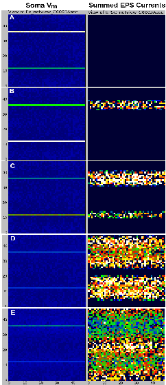

This combined source code distribution and tutorial for the ACnet2 model gives instructions for reproducing the simulation results shown in Figure 1 of:
Beeman D (2013) A modeling study of cortical waves in primary auditory cortex. BMC Neuroscience, 14(Suppl 1):P23 doi:10.1186/1471-2202-14-S1-P23. (http://www.biomedcentral.com/1471-2202/14/S1/P23.)
Full details of this network model of layer IV of the primary auditory cortex are contained in the tutorial/documentation for the ACnet2 GENESIS model ACnet2-docs.html, which can be found in the unpacked '.zip' or '.tar.gz' distribution of ACnet2-GENESIS. It also contains the CNS 2013 poster presentation of this work.
In addition to their scientific purpose, these simulation scripts were developed as a tutorial example for the construction of realistic cortical networks. The simulation scripts are designed to be run with GENESIS 2.3 and are extensively commented, are easily customizable and are designed for extension to more detailed models, or conversion to other simulation systems. The model is slowly being implemented in GENESIS 3 (G-3) and a conversion to neuroConstruct (http://www.neuroconstruct.org/) is planned. The scripts will be of particular interest to those GENESIS network modelers who have not taken advantage of the ten-fold speed increase available with the use of 'hsolve' for network simulations.
The optional GUI for the simulation allows many experiments and variations of the model to be carried out without modifications. This package also contains both GENESIS and simulator-independent Python tools for the visualization and analysis of network activity.
If you do not use the GENESIS simulator, and would like to try out the simulation, it is simplest to download the entire 'Ultimate GENESIS Tutorial Distribution' package with all source code, installation instructions, and the complete set of tutorials (about 50 MB) from http://genesis-sim.org/GENESIS/UGTD.html. GENESIS usually installs without problems under modern versions of Linux. Most questions related to installation have been answered in the archives of the 'genesis-sim-users' mailing list, which are available from the GENESIS 2 Sourceforge page at http://sourceforge.net/projects/genesis-sim/.
ACnet2-docs.html suggests experiments that may be tried with the many configurable options in the scripts, and ways to extend the model. It is my hope that this short tutorial and the example simulation scripts can provide a head start for a graduate student or postdoc who is beginning a cortical modeling project.
I encourage you to extend and share this tutorial/documentation and simulation script package with others. The files here may be freely distributed under the terms of the GNU Lesser General Public License version 2.1.
David Beeman University of Colorado, Boulder dbeeman@colorado.edu Tue Sep 3 12:03:30 MDT 2013